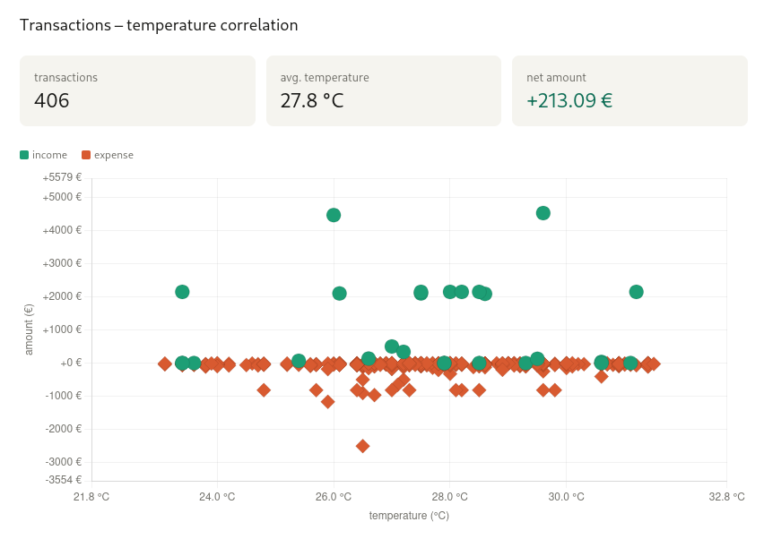

your JS-ERP
DSL based on JavaScript libraries
Build your own ERP by selecting from REST API, SQL DB and Filesystem as data sources.
The given example is a graphical representation of the correlation between banking transactions and weather data.

Project is developed and maintained by Erhard Einsiedler.
For more information contact: ee.online@mailbox.org